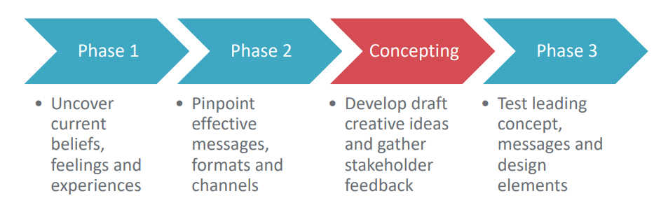
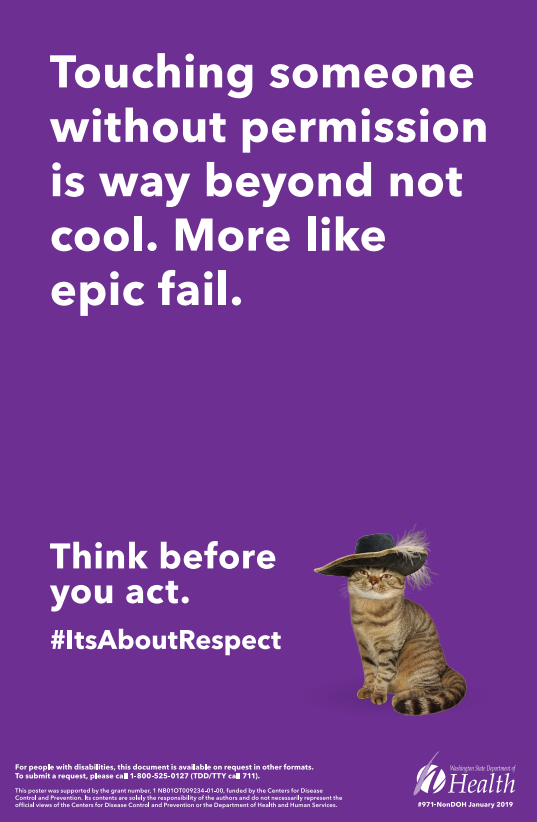
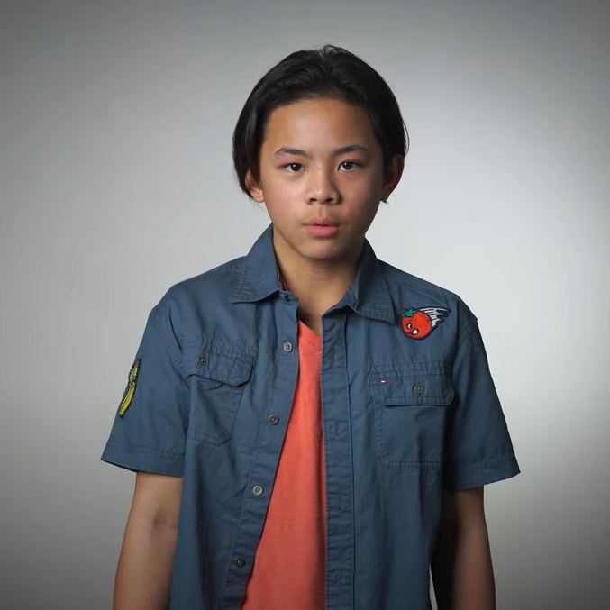
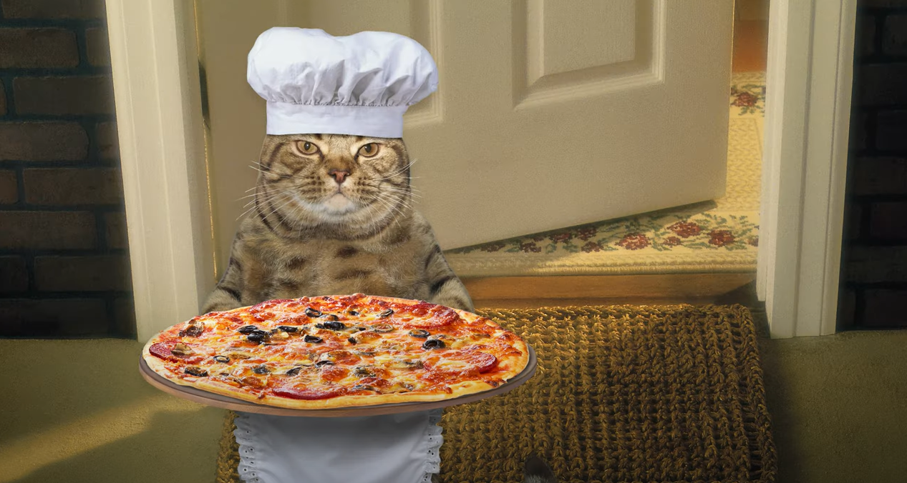

It’s About Respect - Reducing Sexual Violence in Washington
It’s about Respect is a program to prevent sexual violence among middle school students. This case study reports on the program’s initial pilot at one school, compared with a control school.
Background
Note: To minimize site maintenance costs, all case studies on this site are written in the past tense, even if they are ongoing as is the case with this particular program.
At the time of this pilot program, gender-based sexual violence had come to the forefront as a result of the #MeToo movement empowering victims to come forward and report perpetrators. While this effort shone a spotlight on an important issue, it largely focused on helping victims only after the fact. Seeing a critical need, Washington State Department of Health (DOH) wanted to investigate and tackle the roots of this problem and work to shift precursor behaviors that often lead to abuse or sexual transgressions later on.
A NISVS survey of Washingtonians between 2010-2012 found that 45% of women had experienced sexual violence during their lifetime and a 2016 Washington State Healthy Youth Survey had found that 17.7% of 10th graders reported having been made to engage in unwanted kissing, sexual touch or intercourse. DOH wanted to protect its citizens by preventing these incidences from even occurring. DOH tapped C+C to develop and pilot a social marketing campaign focused on primary prevention of sexual violence.
Setting Objectives
Objective 1: Increase the likelihood of youth exposed to the campaign asking permission before touching by 20% and taking another student’s photo by 10%.
Objective 2: Increase agreement amongst youth exposed to the campaign by 20% with social norms around respecting other student’s feelings and physical and personal boundaries and thinking about their behavior before acting.
Objective 3: Create a memorable campaign that cuts through the clutter to ensure a majority of the audience recalls its messages and achieve 500,000 impressions and 10,000 video views through the media buy for adequate reach and frequency.
Getting Informed
Prioritizing Audiences
In partnership with a stakeholder group comprised of prevention, education and community health experts, DOH and C+C determined the campaign would work to change attitudes, behaviors and social norms around boundaries and consent amongst middle school males (age 11-14) and help lay the foundation for healthy relationships later in life.
Formative Research
The team began by conducting a secondary research review, taking a deep dive into 15 campaigns on topics ranging from bystander intervention to diverse gender expressions and violent expressions of masculinity. This work made it evident that there was a lack of information specific to middle school audiences, both reinforcing the team’s decision to fill a critical need and highlighting the requirement to complete primary research to develop an effective campaign that would feel authentic to youth.
With this in mind, the team partnered with Hardwick Research to design and conduct a three-phase qualitative audience research project via an online discussion board – a perfect format for this tech-savvy youth audience. The methodology also enabled the team to recruit a diverse group of middle schoolers across Washington to participate and help co-create the campaign.
The goal of phase one was to better understand the feelings, beliefs and experiences of the 56 youth participants (35 males, 21 females) related to the topic of body autonomy (i.e. having control over who has access to your body, for what and for how long.) This included a number of activities over multiple days from projective techniques using images to describe participant’s feelings when boundaries are violated to creating a poster about respecting others.

In phase two of the research, the focus was on understanding the messages, formats and channels most popular amongst youth, such as social media, online videos, pledges and reminder items like wristbands. Between phase two and phase three, the insights were used to develop a creative concept for the campaign and gather further input from the stakeholder group.
In phase three, the team again tapped the online discussion board to conduct red flag analysis of the concept with youth and identify any problematic messages or design elements. Message testing helped refine copy and elements of the draft in-school posters and video storyboards. It also proved the campaign “mascot” – a cat doing random and unexpected activities – resonated with the audience and would keep their attention while reinforcing the campaign message.
A key finding from the research was that middle schoolers had the tools to understand the concept of body autonomy. But when it came time to put that understanding to real-world practice, many kids had trouble making the connection – that, yes, it really is not cool to make people feel uncomfortable, and, yes, they should respect the bodies of others just as they expect others to respect their own bodies. The planning team focused the strategy on driving that point home.
In general, the students had experienced and were concerned by unwanted touching, photos without permission, body shaming comments and general disrespect for other’s personal bubbles (i.e. boundaries). They wanted straightforward instructions (tell me what to do), but with an empathetic and positive tone. They wanted to hear from peers — not adults, which were polarizing and often seen as a last resort. The best places to reach them were in school or on social media, especially via YouTube using eye-catching visuals and animations.
Delivering the Program
Based on the formative research, DOH and C+C developed the It’s About Respect campaign. The creative concept keyed off the central insight that middle schoolers wanted to hear from their peers, and that they also responded to things that were a little quirky. Like talking cats. And pizza. So, the team developed a concept that featured about 8.3 seconds of a middle schooler giving some straight talk about respect, followed by 3.2 seconds of either a talking cat delivering pizza, a talking cat playing soccer, or a talking cat wearing a fancy hat. (Norm Appeals)

School recruitment: The team collaborated with the Office of Superintendent of Public Instruction (OSPI) to define a set of criteria for the pilot schools and find potential candidates. This was done both through OSPI’s school network and a related grant opportunity where schools could indicate interest in participating in the pilot.
Creative production: To develop the video ads, two young male actors emulated the style of the online video diaries so popular on social media at the time, to create something that would be familiar to the audience. For overall campaign cohesion, consistent messages and the same mascot were used for the in-school posters. (Mass Media; Vivid, Personalized, Credible, Empowering Communication)

Digital campaign: An online media strategy was designed to achieve high reach and frequency amongst the priority audience over a five-week period within pilot area zip codes. Along with geotargeting and demographics, relevant interests were used including memes, sports and gaming terms, such as Minecraft and Fortnite, to target our audience. We also tested the effectiveness of several tactics, including: banner ads via the Google Ad Network, pre-roll video ads on YouTube, and social ads on Facebook, Instagram and Snapchat.

In-school campaign: The in-school campaign involved posters in high-traffic areas. With the campaign touching on sensitive subject matter, the team kept a trauma-informed approach in mind during planning. Before implementation, communications tools and resources were created for partner schools to help inform faculty and parents about the campaign and prepare them for potential tough questions from students.
Measuring Achievements
To measure impact, the team developed a post-campaign survey to collect data from students on their attitudes, behaviors and social norms around the topic of body autonomy as well as campaign recall. The survey was administered to 200 students at the pilot school and 200 students at a control school not exposed to the campaign with nearly identical demographics
Results
The results were statistically significant and impressive. They demonstrated that the cat worked! As it turned out, middle schoolers were more likely to stay tuned in if they were offered something fun and unexpected as a reward and the overall campaign achieved the following results:
- Compared with the control school, students at the pilot school were 39%more likely to ask permission before touching another student and 18% more likely to ask permission before taking another student’s photo.
- Compared with the control school, students at the pilot school were 32-46% more in agreement with social norms about respecting other’s feelings and physical and personal boundaries. They were also 20% more in agreement that they think about whether their behavior ill make others uncomfortable.
- Of the pilot students surveyed, 70% had recall of the posters and 25% had recall of the digital campaign.
- Overall the digital media buy garnered nearly 700,000 impressions and 17,000 video views.
Contacts
Francesca Davidson
C+C
fdavidson@cplusc.com
206-262-0363
Notes
This case study was compiled in 2020 by Jay Kassirer based on information provided by C+C.